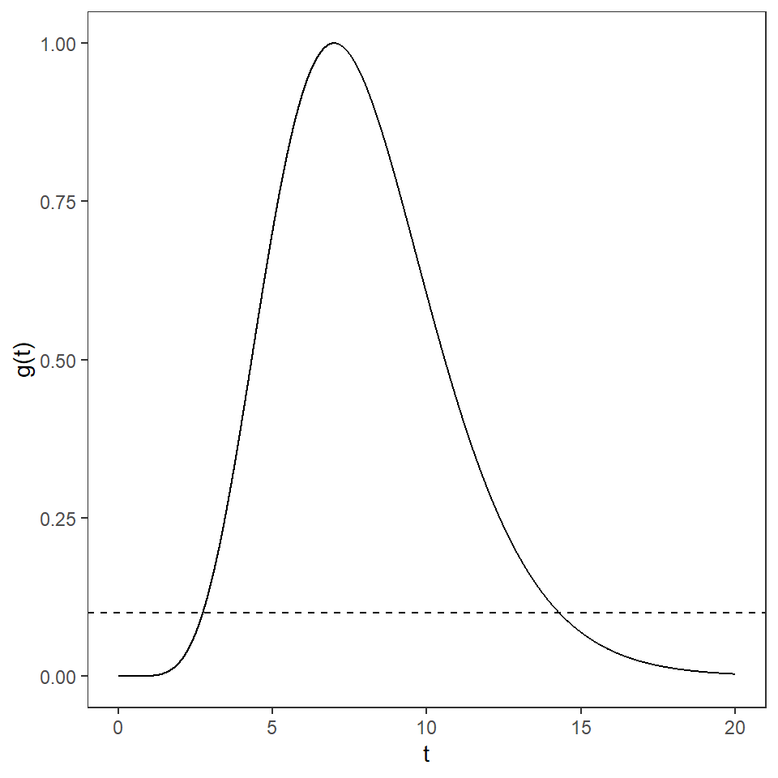
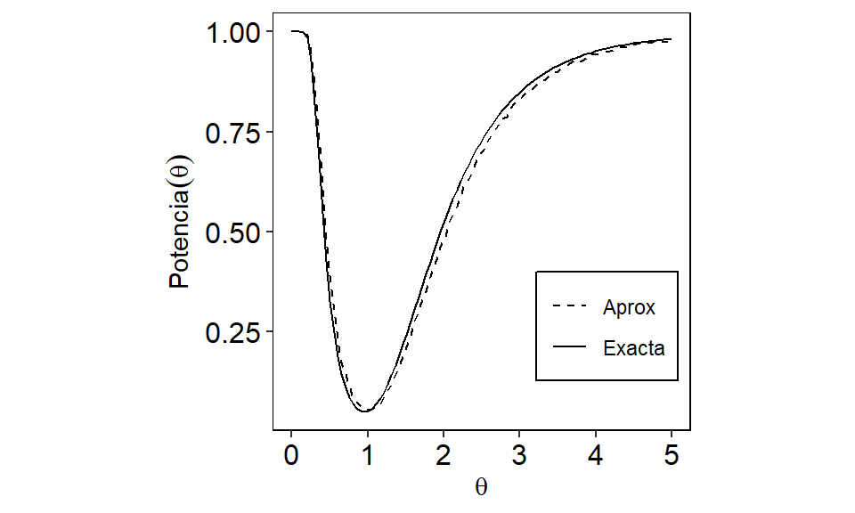

XS3310 Teoría Estadística
I Semestre 2024
Escuela de Estadística, UCR.
En la parte anterior encontramos un método para encontrar la región crítica de un contraste cuando se contrastan dos hipótesis simples (o hipótesis compuestas generalizables) sin embargo, el Lema de Neyman-Pearson no es capaz de encontrar una región crítica cuando las hipótesis son compuestas y no se pueden generalizar a manera de encontrar un contraste UMP.
Una manera de hacer esto es por medio del contraste de razón de verosimilitudes que nos da una forma más general de trabajar con las propiedades de verosimilitud y aún así obtener un buen contraste a partir de él.
Definición 4.10: Estadístico de la razón de verosimilitudes. Suponga que se tiene una muestra aleatoria \(X_{1}, X_{2}, ... , X_{n}\) de una población con vector de parámetros \(\Theta = (\theta_1, \theta_2, ... , \theta_k)\) y con función de verosimilitud \(\mathcal{L}(\Theta)\). Se desea hacer un contraste de hipótesis sobre uno o más de estos parámetros, de forma que las hipótesis sean compuestas, es decir podemos tener hipótesis \(H_{0}: \Theta \in \Omega_{0}\) contra \(H_{1}: \Theta \in \Omega_{1}\). Entonces se definen \(\mathcal{L}(\hat{\Omega}_{0}) = \max\limits_{\Theta \in \Omega_{0}}\mathcal{L}(\Theta)\) y \(\mathcal{L}(\hat{\Omega}) = \max\limits_{\Theta \in \Omega}\mathcal{L}(\Theta)\). Estos corresponden a las funciones de verosimilitud evaluadas en sus correspondientes máximos de verosimilitud. Se define el estadístico de la razón de verosimilitudes, denotado \(\lambda\), como \(\frac{\mathcal{L}(\hat{\Omega}_{0})}{\mathcal{L}(\hat{\Omega})}\).
De esta definición podemos inferir el uso que se le puede dar a dicho estadístico. Se puede demostrar que \(0 < \lambda < 1\). Si \(\lambda\) es un valor muy cercano a uno esto significa que la mejor explicación de la verosimilitud está siendo dada por los valores de \(\Omega_{0}\), mientras que pasa lo contrario si \(\lambda\) se aproxima mucho a cero. Por lo tanto, un buen contraste consistiría en rechazar \(H_0\) si \(\lambda < k\), donde el \(k\) se elije como anteriormente, fijando el tamaño.
Empezaremos mostrando la técnica con un ejemplo sencillo que consiste de solo un parámetro desconocido. Bajo este esquema podemos definir el estadístico \(\lambda\) como \(\lambda = \frac{\mathcal{L}(\theta_0)}{\mathcal{L}(\hat{\theta})}\), donde \(\theta_0\) es el valor especificado en la hipótesis nula y \(\hat{\theta}\) es el EMV de \(\theta\).
Ejemplo: Sea \(X_{1}, X_{2}, ... , X_{n}\) una muestra aleatoria tal que \(X_{j} \sim N(\mu,\sigma^2)\) donde \(\mu\) es desconocido y \(\sigma^2\) es conocido. Se desean contrastar las siguientes hipótesis:
\[H_{0}: \mu = \mu_0 \text{ contra } H_{1}: \mu \neq \mu_0\]
Obtenga un contraste con un nivel de significancia de \(\alpha_0\).
Solución: Lo primero que se puede notar es que la hipótesis alterna es compuesta y no existe un contraste UMP para todo \(\mu \neq \mu_0\), por lo que no podemos usar el Lema de Neyman-Pearson y deberemos usar la razón de verosimilitudes. Sabemos de antemano que \(\mathcal{L}(\mu) = (2\pi)^{-\frac{n}{2}} (\sigma^2)^{-\frac{n}{2}} e^{-\frac{\sum(x_{j} -\mu)^2}{2\sigma^2}}\) Por lo tanto:
\(\mathcal{L}(\hat{\Omega}_0) = \mathcal{L}(\mu_0) = (2\pi)^{-\frac{n}{2}} (\sigma^2)^{-\frac{n}{2}} e^{-\frac{\sum(X_{j} -\mu_0)^2}{2\sigma^2}} = (2\pi)^{-\frac{n}{2}} (\sigma^2)^{-\frac{n}{2}} e^{-\frac{ \sum{X_{j}^{2}} - 2n\mu_{0} \bar{X} + n\mu_{0}^2 }{2\sigma^2}}\)
También sabemos, de temas anteriores del curso, que el estimador de máxima verosimilitud para \(\mu\) es \(\hat{\mu} = \bar{X}\). Evaluando esto en la verosimilitud de todo \(\Omega\) obtenemos:
\(\mathcal{L}(\hat{\Omega}) = \mathcal{L}(\hat{\mu}) = \mathcal{L}(\bar{X}) = (2\pi)^{-\frac{n}{2}} (\sigma^2)^{-\frac{n}{2}} e^{-\frac{ \sum{X_{j}^{2}} - 2n\bar{X} \cdot \bar{X} + n\bar{X}^2 }{2\sigma^2}} = (2\pi)^{-\frac{n}{2}} (\sigma^2)^{-\frac{n}{2}} e^{-\frac{ \sum{X_{j}^{2}} - n\bar{X}^2 }{2\sigma^2}}\)
De esta manera tenemos:
\(\lambda = \frac{\mathcal{L}(\mu_0)}{\mathcal{L}(\hat{\mu})} = \frac{(2\pi)^{-\frac{n}{2}} (\sigma^2)^{-\frac{n}{2}} e^{-\frac{ \sum{X_{j}^{2}} - 2n\mu_{0} \bar{X} + n\mu_{0}^2 }{2\sigma^2}}}{(2\pi)^{-\frac{n}{2}} (\sigma^2)^{-\frac{n}{2}} e^{-\frac{ \sum{X_{j}^{2}} - n\bar{X}^2 }{2\sigma^2}}} = e^{\frac{-n\left( \bar{X} - \mu_0\right) ^2}{2\sigma^2}}\)
Sabemos que el contraste consiste en rechazar \(H_0\) si \(\lambda < k\), es decir
\(e^{\frac{-n\left( \bar{X} - \mu_0\right) ^2}{2\sigma^2}} < k\)
\(\Rightarrow \frac{-n\left( \bar{X} - \mu_0\right) ^2}{2\sigma^2} < \ln(k)\)
\(\Rightarrow \frac{n\left( \bar{X} - \mu_0\right) ^2}{\sigma^2} > -2\ln(k) = k^{\prime}\)
Nótese que cuando \(H_0\) es cierto entonces \(\frac{n\left( \bar{X} - \mu_0\right) ^2}{\sigma^2} \sim \chi^{2}_{(1)}\). Por lo tanto el valor de \(k^{\prime}\) es el valor de la tabla de la chi-cuadrada con un grado de libertad que acumula una probabilidad de \(\alpha_0\) a su derecha, es decir \(k^{\prime} = \chi^{2}_{1-\alpha_0,1}\). Por lo tanto el contraste consiste en rechazar la hipótesis nula cuando \(\frac{n\left( \bar{X} - \mu_0\right) ^2}{\sigma^2} > \chi^{2}_{1-\alpha_0,1}\).
Observe que esta regla de decisión puede expresarse por medio de otra distribución. Sacando la raíz cuadrada a ambos lados, tenemos:
\[\left| \frac{\sqrt{n}\left( \bar{X} - \mu_0\right)}{\sigma}\right| > \sqrt{k^{\prime}}=c.\]
El lado izquierdo de la inecuación va a ser positiva si \(\bar{X} > \mu_0\) o negativa si \(\bar{X} < \mu_0\). Dada la hipótesis alternativa, nosotros sabemos que \(\bar{X}\) es tanto menor como mayor a \(\mu_0\), por lo que podríamos decir que rechazamos \(H_0\) si \(\frac{\sqrt{n}\left( \bar{X} - \mu_0\right)}{\sigma} > c\) o \(\frac{\sqrt{n}\left( \bar{X} - \mu_0\right)}{\sigma} < -c\).
Si \(H_0\) es cierta entonces \(\frac{\sqrt{n}\left( \bar{X} - \mu_0\right)}{\sigma} \sim N(0,1)\). Si queremos encontrar el valor de \(c\) lo podemos despejar igual que anteriormente, por medio del tamaño fijo:
\(\alpha_0 = P\left( \frac{\sqrt{n}\left( \bar{X} - \mu_0\right)}{\sigma} > c \right) + P\left( \frac{\sqrt{n}\left( \bar{X} - \mu_0\right)}{\sigma} < -c \right)\)
Como el valor que estamos intentando encontrar es el mismo en valor absoluto eso significa que: \(P\left( \frac{\sqrt{n}\left( \bar{X} - \mu_0\right)}{\sigma} > c \right) = P\left( \frac{\sqrt{n}\left( \bar{X} - \mu_0\right)}{\sigma} < -c \right) = \frac{\alpha_0}{2}\)
Esto quiere decir que \(c = z_{1-\frac{\alpha_0}{2}}\). Entonces el contraste anterior es equivalente a rechazar \(H_0\) si \(\frac{\sqrt{n}\left( \bar{X} - \mu_0\right)}{\sigma} > z_{1-\frac{\alpha_0}{2}}\) o \(\frac{\sqrt{n}\left( \bar{X} - \mu_0\right)}{\sigma} < -z_{1-\frac{\alpha_0}{2}}\) por lo que podemos ver que esta es la prueba que normalmente se utiliza en la práctica.
Ahora procedamos a generalizar este ejemplo:
Ejemplo: Sea \(X_{1}, X_{2}, ... , X_{n}\) una muestra aleatoria tal que \(X_{j} \sim N(\mu,\sigma^2)\) donde \(\mu\) y \(\sigma^2\) son desconocidos. Se desean contrastar las siguientes hipótesis:
\[H_{0}: \mu = \mu_0 \text{ contra } H_{1}: \mu \neq \mu_0\]
Obtenga un contraste con un nivel de significancia de \(\alpha_0\).
Solución: A diferencia del caso pasado, ahora ambas hipótesis son compuestas. En este caso tenemos que \(\Theta = (\mu, \sigma^2)\), a diferencia del caso anterior en donde solo teníamos un parámetro desconocido. Por lo tanto vamos a requerir los EMV de cada parámetro:
\(\hat{\mu} = \bar{X}\)
\(\hat{\sigma}^2 =\frac{\sum(x_{j} -\bar{X})^2}{n}\)
Sin embargo, si definimos \(\Theta_{0}\) como el vector de parámetros definidos por \(H_0\) tendríamos que \(\Theta_0 = (\mu_0 , \sigma^2)\). Por lo tanto, la verosimilitud definida para \(\Theta_{0}\) es:
\(\mathcal{L}(\Theta_0) = (2\pi)^{-\frac{n}{2}} (\sigma^2)^{-\frac{n}{2}} e^{-\frac{\sum(X_{j} -\mu_0)^2}{2\sigma^2}}\)
Nótese que \(\sigma^2\) sigue siendo desconocido, por lo que vamos a tener que estimarlo. Resulta que su estimador máximo verosimil viene dado por \(\hat{\sigma}^{2}_{0} = \frac{\sum(x_{j} -\mu_0)^2}{n}\). Ahora procedamos a obtener las funciones de verosimilitud evaluadas en sus respectivos máximos verosímiles:
\(\mathcal{L}(\hat{\Omega}_0) = (2\pi)^{-\frac{n}{2}} (\hat{\sigma}^{2}_{0})^{-\frac{n}{2}} e^{-\frac{\sum(x_{j} -\mu_0)^2}{2\hat{\sigma}^{2}_{0}}} = (2\pi)^{-\frac{n}{2}} \left( \frac{\sum(x_{j} -\mu_0)^2}{n}\right) ^{-\frac{n}{2}} e^{-\frac{n\sum(x_{j} -\mu_0)^2}{2\sum(x_{j} -\mu_0)^2}}\)
\(= (2\pi)^{-\frac{n}{2}} \left( \frac{\sum(x_{j} -\mu_0)^2}{n}\right) ^{-\frac{n}{2}} e^{-\frac{n}{2}}\)
\(\mathcal{L}(\hat{\Omega}) = (2\pi)^{-\frac{n}{2}} (\hat{\sigma}^2)^{-\frac{n}{2}} e^{-\frac{\sum(x_{j} -\bar{X})^2}{2\hat{\sigma}^2}} = (2\pi)^{-\frac{n}{2}} \left( \frac{\sum(x_{j} -\bar{X})^2}{n}\right) ^{-\frac{n}{2}} e^{-\frac{n\sum(x_{j} -\bar{X})^2}{2\sum(x_{j} -\bar{X})^2}}= (2\pi)^{-\frac{n}{2}} \left( \frac{\sum(x_{j} -\bar{X} )^2}{n}\right) ^{-\frac{n}{2}} e^{-\frac{n}{2}}\)
Por lo tanto, el estadístico de la razón de verosimilitudes sería:
\(\lambda = \frac{(2\pi)^{-\frac{n}{2}} \left( \frac{\sum(x_{j} -\mu_0)^2}{n}\right) ^{-\frac{n}{2}} e^{-\frac{n}{2}}}{(2\pi)^{-\frac{n}{2}} \left( \frac{\sum(x_{j} -\bar{X} )^2}{n}\right) ^{-\frac{n}{2}} e^{-\frac{n}{2}}} = \left( \frac{\sum(x_{j} -\bar{X} )^2}{\sum(x_{j} -\mu_0)^2} \right)^{\frac{n}{2}} < k\)
Por lo tanto podemos decir que rechazamos la hipótesis nula si \(\left( \frac{\sum(x_{j} -\bar{X} )^2}{\sum(x_{j} -\mu_0)^2} \right)^{\frac{n}{2}} < k\). No obstante, podemos hacer ciertos desarrollos matemáticos a esta desigualdad para llegar a un estadístico con distribución conocida.
\(\left( \frac{\sum(x_{j} -\bar{X} )^2}{\sum(x_{j} -\mu_0)^2} \right)^{\frac{n}{2}} < k\) \(\Rightarrow \left( \frac{\sum(x_{j} -\bar{X} )^2}{\sum(x_{j} -\bar{X})^2 + n(\bar{X} - \mu_0)^2} \right)^{\frac{n}{2}} < k\) \(\Rightarrow \frac{\sum(x_{j} -\bar{X} )^2}{\sum(x_{j} -\bar{X})^2 + n(\bar{X} - \mu_0)^2} < k^{\frac{2}{n}}\) \(\Rightarrow \frac{1}{ \frac{\sum(x_{j} -\bar{X})^2 + n(\bar{X} - \mu_0)^2}{\sum(x_{j} -\bar{X} )^2} } < k^{\frac{2}{n}}\) \(\Rightarrow \frac{1}{ 1 + \frac{n(\bar{X} - \mu_0)^2}{\sum(x_{j} -\bar{X} )^2} } < k^{\frac{2}{n}}\) \(\Rightarrow \frac{n(\bar{X} - \mu_0)^2}{\sum(x_{j} -\bar{X} )^2} > k^{-\frac{2}{n}} - 1\) \(\Rightarrow \frac{n(\bar{X} - \mu_0)^2}{ \frac{1}{n-1} \sum(x_{j} -\bar{X} )^2} > (n-1) \left( k^{-\frac{2}{n}} - 1\right)\) \(\Rightarrow \frac{n(\bar{X} - \mu_0)^2}{ S^2} > (n-1) \left( k^{-\frac{2}{n}} - 1\right) = k^{\prime}\)
De esta forma llegamos a una distribución conocida. Hemos demostrado en el curso anterior que \(\frac{n(\bar{X} - \mu_0)^2}{ S^2} \sim F_{(1,n-1)}\). Por lo tanto, utilizando el nivel de significancia \(\alpha_0\) obtenemos que \(k^{\prime} = F_{1-\alpha_0,1,n-1}\). Es decir, rechazamos la hipótesis nula si \(\frac{n(\bar{X} - \mu_0)^2}{S^2} > F_{\alpha_0,1,n-1}\). Si sacamos la raíz cuadrada del contraste anterior obtenemos que vamos a rechazar \(H_0\) si \(\frac{\sqrt{n}(\bar{X} - \mu_0)}{S} > c\) o si \(\frac{\sqrt{n}(\bar{X} - \mu_0)}{S} < -c\) donde \(c = \sqrt{\alpha_0,F_{1,n-1}}\). No obstante podemos reconocer la distribución de \(\frac{\sqrt{n}(\bar{X} - \mu_0)}{S}\) la cual es una t-Student con \(n-1\) grados de libertad. Por lo tanto, equivale decir que \(c=t_{\alpha_0,n-1}\). Esta región crítica corresponde la prueba T utilizada en la práctica para este problema.
El método de la razón de verosimilitudes tiene un inconveniente y es que en muchas ocasiones es imposible generar un estadístico con distribución conocida a partir de \(\lambda\). Sin embargo, podemos hacer uso del Teorema de Wilks que veremos a continuación.
Teorema 4.3: Teorema de Wilks. Suponga que \(X_{1}, X_{2}, ... , X_{n}\) tiene una función de verosimilitud \(\mathcal{L}(\Theta)\) y se tienen las hipótesis \(H_{0}: \Theta \in \Omega_0\) contra \(H_{1}: \Theta \in \Omega_1\). Sea \(\Theta\) el vector de parámetros y \(\Theta_0\) el vector de parámetros definidos en \(\Omega_0\), de forma que podemos definir \(d = \dim(\Theta)\) y \(d_0 = \dim(\Theta_0)\). Si \(n \to +\infty\) entonces \[G=-2\ln(\lambda) \xrightarrow{\text{d}} \chi^{2}_{(d-d_0)}.\]
Ejemplo: Sea \(X_{1}, X_{2}, ... , X_{n}\) una muestra aleatoria tal que \(X_{j} \sim Exp(\theta)\) y suponga que se desean contrastar las hipótesis \(H_{0}: \theta = \theta_0\) contra \(H_{1}: \theta \neq \theta_0\). Encuentre el contraste de razón de verosimilitudes para un tamaño de \(\alpha_0\).
Solución: Empecemos definiendo \(\Theta\) y \(\Theta_0\). Tenemos que \(\Theta = \left\lbrace \theta \right\rbrace\) y que \(\Theta_{0} = \left\lbrace \theta_0 \right\rbrace\). Por lo tanto \(\dim(\Theta) = 1\) y \(\dim(\Theta_0) = 0\). Sigamos obteniendo la verosimilitud para este problema:
\(\mathcal{L}(\Theta) = \mathcal{L}(\theta) = \theta^{-n} e^{-\frac{\sum x_j}{\theta}} = \theta^{-n} e^{-\frac{n \bar{x}}{\theta}}\)
De este resultado podemos demostrar fácilmente que el EMV de \(\theta\) es \(\bar{X}\). Por lo tanto tenemos las siguientes verosimilitudes evaluadas en sus máximos verosímiles:
\(\mathcal{L}(\theta_0) = \theta_{0}^{-n} e^{-\frac{n \bar{x}}{\theta_0}}\) \(\mathcal{L}(\hat{\theta}) = \mathcal{L}(\bar{X}) = \bar{X}^{-n} e^{-n}\)
Por lo tanto tenemos que el estadístico de la razón de verosimilitudes es
\(\lambda = \frac{\mathcal{L}(\theta_0)}{\mathcal{L}(\hat{\theta})} = \frac{\theta_{0}^{-n} e^{-\frac{n \bar{x}}{\theta_0}}}{\bar{X}^{-n} e^{-n}} = \left( \frac{\bar{X}}{\theta_0} \right)^{n} e^{-n\left( \frac{\bar{X}}{\theta_0} - 1 \right) }\)
Si aplicamos el teorema de Wilks tenemos la siguiente estadística:
\(G = -2\ln(\lambda) = -2n\left[ \ln(\bar{X}) - \ln(\theta_0) + 1 - \frac{\bar{X}}{\theta_0} \right]\)
Por lo tanto, vamos a rechazar la hipótesis nula si \(G > \chi^{2}_{1-\alpha_0,1}\).
Sin embargo, para este contraste podemos encontrar una región crítica exacta, sin necesidad de aplicar el Teorema de Wilks. Sea \(T = \frac{n\bar{X}}{\theta_0}\), de forma que
\(\lambda = g(T) = n^{-n} T^{n} e^{-(T-n)}\)
Recuerde que el contraste de la razón de verosimilitudes consiste en rechazar la hipótesis nula si \(\lambda < k\) es decir, si \(g(T) < k\). En la siguiente figura podemos observar la gráfica de \(g(T)\) para \(T >0\). La línea punteada en el gráfico corresponde al valor teórico de \(k\). Nótese que \(g(T) < k\) si \(T < k_1\) o si \(T > k_2\), donde \(k_1\) y \(k_2\) se eligen utilizando el tamaño del contraste. Por lo tanto, vamos a rechazar la hipótesis nula si \(T < k_1\) o \(T > k_2\).
Suponiendo \(n=7\), \(\alpha_0 = 0.05\) y \(\theta_{0} = 1\)
Gráfico de g(T)
\[P\left( T < k_1 | \theta_0 \right) = P\left( T > k_2 | \theta_0 \right) = \frac{\alpha_0 }{2}\]
\[P\left( W < k_{1}^{\prime} | \theta_0 \right) = P\left( W > k_{2}^{\prime} | \theta_0 \right) = \frac{\alpha_0}{2}\]
En la siguiente Figura podemos ver una comparación de la potencia exacta y aproximada para este ejemplo, utilizando \(n=7\), \(\alpha_0 = 0.05\) y \(\theta_{0} = 1\). Nótese como la prueba aproximada tiene una perdida en potencia para \(\theta > 1\).
Comparación de potencias
Ejemplo: Sean \(X_{1}, X_{2}, ... , X_{n}\) y \(Y_{1}, Y_{2}, ... , Y_{n}\) dos muestras aleatorias independientes tales que \(X_{j} \sim \operatorname{Poisson}(\theta_1)\) y \(Y_{j} \sim \operatorname{Poisson}(\theta_2)\). Se desea contrastar las hipótesis \(H_{0}: \theta_1 = \theta_2\) contra \(H_{1}: \theta_1 \neq \theta_2\). Encuentre un contraste para estas hipótesis utilizando el Teorema de Wilks.
Solución: Empecemos por definir los espacios paramétricos para tener una mejor idea del problema. En el caso de \(\Omega_{0}\) tenemos que este se define como \(\Omega_{0} = \left\lbrace (\theta_1 , \theta_2) | \theta_1 = \theta_2 = \theta \right\rbrace\). Por otra parte, \(\Omega = \left\lbrace (\theta_1 , \theta_2) | \theta_1 , \theta_2 \in \mathbb{R}^{+} \right\rbrace\). Por lo tanto tenemos que \(\Theta_{0} = \theta\) y \(\Theta = (\theta_1 , \theta_2)\) y sus dimensiones son 1 y 2, respectivamente. Procedamos a encontrar la verosimilitud:
\(\mathcal{L}(\Theta) = \mathcal{L}(\theta_1 , \theta_2) = \mathcal{L}(\theta_1) \mathcal{L}(\theta_2) = \frac{\theta_{1}^{\sum X_{j}} e^{-n\theta_{1}}}{\prod X_{j}!} \frac{\theta_{2}^{\sum Y_{j}} e^{-n\theta_{2}}}{\prod Y_{j}!} = \frac{\left( \theta_{1}^{\bar{X}} \theta_{2}^{\bar{Y}} \right)^{n} e^{-n(\theta_{1}+\theta_{2})} }{\prod X_{j}! \prod Y_{j}!}\)
Se puede demostrar que de esta expresión se obtiene \(\bar{X}\) como EMV de \(\theta_1\) y \(\bar{Y}\) como EMV de \(\theta_2\). Ahora procedamos a encontrar la verosimilitud evaluada en \(\Theta_{0}\):
\(\mathcal{L}(\Theta_0) = \mathcal{L}(\theta) = \frac{\theta^{ n(\bar{X} + \bar{Y}) } e^{-2n\theta} }{\prod X_{j}! \prod Y_{j}!}\)
Ahora debemos encontrar el EMV de \(\theta\). Para ello sacamos primero la log-verosimilitud:
\(\ell(\theta) = n(\bar{X} + \bar{Y})\ln(\theta) - 2n\theta - \ln\left( \prod X_{j}! \prod Y_{j}! \right)\)
\(\Rightarrow \frac{\partial \ell (\theta)}{\partial \theta} = \frac{ n(\bar{X} + \bar{Y}) }{\theta} - 2n = 0\)
\(\Rightarrow \hat{\theta} = \frac{\bar{X} + \bar{Y}}{2}\)
La segunda derivada con respecto a \(\theta\) sería negativa, por lo que \(\hat{\theta}\) es el EMV. Ahora procedemos a encontrar \(\mathcal{L}(\hat{\Omega})\) y \(\mathcal{L}(\hat{\Omega}_0)\).
\(\mathcal{L}(\hat{\Omega}_0) = \frac{ \left( \frac{\bar{X} + \bar{Y}}{2} \right) ^{ n(\bar{X} + \bar{Y}) } e^{-n(\bar{X} + \bar{Y})} }{\prod X_{j}! \prod Y_{j}!}\)
\(\mathcal{L}(\hat{\Omega}) = \frac{\left( \bar{X}^{\bar{X}} \bar{Y}^{\bar{Y}} \right)^{n} e^{-n(\bar{X}+\bar{Y})} }{\prod X_{j}! \prod Y_{j}!}\)
Por lo tanto, el estadístico \(\lambda\) sería:
\(\lambda = \frac{\mathcal{L}(\hat{\Omega}_0)}{\mathcal{L}(\hat{\Omega})} = \left( \frac{\left( \frac{\bar{X} + \bar{Y}}{2} \right) ^{ (\bar{X} + \bar{Y}) }}{\bar{X}^{\bar{X}} \bar{Y}^{\bar{Y}}} \right)^{n}\)
Ya con esto podemos encontrar una expresión para la estadística \(G\):
\(G = -2\ln(\lambda) = -2\ln \left( \frac{\left( \frac{\bar{X} + \bar{Y}}{2} \right) ^{ (\bar{X} + \bar{Y}) }}{\bar{X}^{\bar{X}} \bar{Y}^{\bar{Y}}} \right)^{n}\)
\(= -2n\left[ (\bar{X} + \bar{Y}) \ln\left( \frac{\bar{X} + \bar{Y}}{2}\right) - \bar{X} \ln(\bar{X}) - \bar{Y} \ln(\bar{Y}) \right]\)
Por el Teorema de Wilks, rechazamos la hipótesis nula si este valor es mayor a \(\chi^{2}_{1-\alpha_0,1}\).
Como parte adicional del ejemplo, supongamos que \(n=100\), \(\bar{x} = 20\), \(\bar{y} = 22\) y \(\alpha_0 = 0.01\). Utilicemos estos valores para contrastar las hipótesis del ejemplo. Con estos valores se tiene que \(G \approx 9.53\) y que \(\chi^{2}_{0.01,1} = 6.635\). Tenemos que \(G > \chi^{2}_{0.01,1}\) por lo que rechazamos la hipótesis nula.
En el tema pasado, presentamos la distribución asintótica de los estimadores de máxima verosimilitud. Recordemos que bajo las condiciones del teorema, tenemos que para el EMV \(\hat{\theta}\) de \(\theta\), tenemos
\[\left[I(\theta)\right]^{1/2}(\hat{\theta}_n - \theta) \stackrel{d}{\longrightarrow} N(0,1),\] donde \(I(\theta)\) es la información de Fisher. De esta forma, tenemos que
\[\left[I(\theta)\right](\hat{\theta}_n - \theta)^2 \stackrel{d}{\longrightarrow} \chi_{(1)}^2.\] Como consecuencia, tenemos la definición del estadístico de Wald.
Definición 4.11: Estadístico de Wald Sea \(X_1,...,X_n\) una muestra aleatoria de una población con distirbución que depende de \(\theta\) y \(\hat{\theta}_n\) es el EMV de \(\theta\). Se desea contrastar las hipótesis: \[H_{0}: \theta = \theta_0,~~~~ \text{contra}~~~~ H_{1}: \theta \neq \theta_0.\] El estadístico de Wald se define como \[W= (\hat{\theta}_n - \theta_0)I(\hat{\theta})(\hat{\theta}_n - \theta_0).\]
Teorema 4.4: Contraste de Wald Bajo las mismas condiciones , el contraste de Wald con un nivel de significancia \(\alpha_0\), consiste en rechazar \(H_0\), si \[W>\chi^2_{(1-\alpha_0,1)}.\]
Ejemplo: Recordemos en el ejemplo anterior, en donde nos interesa contrastar las hipótesis \(H_{0}: \theta = \theta_0\) contra \(H_{1}: \theta \neq \theta_0\). Encuentre el contraste de razón de verosimilitudes para un tamaño de \(\alpha_0\).
Solución: Se puede comprobar que \(\hat{\theta}=\bar{X}\), \(I(\beta)=\frac{n}{\beta^2}\). Suponga que \(\theta_0=1\) y con \(n=7\) se obtiene \(\bar{X}=5\). Por lo tanto, \[W=(\hat{\theta}_n - \theta_0)I(\hat{\theta})(\hat{\theta}_n - \theta_0)=\left(\frac{7}{5^2}\right)(5-1)^2=4.48.\] Con \(\alpha_0=0.05\), \(W=4.48>\chi^2_{(1-\alpha_0,1)}=3.8415\). Es decir, el contraste de Wald sugiere rechazar la hipótesis nula con un nivel de significancia de \(0.05\).
Por otro lado, si utilizamos el contraste de razón de verosimilitud, tenemos que \[V=\frac{2n\bar{X}}{\theta_0}=\frac{2\cdot7\cdot 5}{1}=70>\chi^2_{0.975,2\cdot7}=26.11.\] Finalmente, por el teorema de Wilks, \[G = -2\ln(\lambda) = -2n\left[ \ln(\bar{X}) - \ln(\theta_0) + 1 - \frac{\bar{X}}{\theta_0} \right]\] \[=-2\cdot 7 \left( \ln(3.5) - \ln(1) +1 - \frac{3.5}{1} \right)=33.47.\] Como \(G=33.467>\chi^2_{(1-\alpha_0,1)}=3.8415\), el teorema de Wilks sugiere rechazar la hipótesis nula con nivel de significancia de \(0.05\).